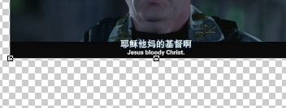
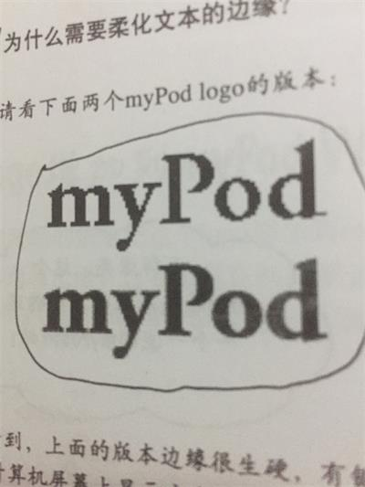

浏览器中显示图像需要img元素，浏览器对img元素的处理与其它元素稍有不同，以好h1元素为例，浏览器读到它时只需要把它们显示出来就可以了，很简单。
而img则不同:浏览器在页面中显示图像之前，必须先获取这个图像。
img的使用首先要用到src属性，它的使用方法与href一样:<img src="图片路径">
图片的格式有很多很多种，但Web上最常用的有三种:JPEG、PNG、GIF。
JPEG:照片和复杂图像使用这种格式，它最适合连续色调的图像。支持上千万中颜色的图片、有损、不支持透明度、文件小、不支持动图。
PNG:最适合单色图像和线条构成的图像，如logo。支持上百万种颜色、无损、可透明、大小不定（取决于颜色数）。
GIF:与PNG类似，最适合单色图像和线条构成的图像。支持256种不同颜色的图像、无损、半可透明（同时只允许设置一种颜色透明）、文件大、支持动画。
GIF是Web最早的图像格式。PNG是最新的图像格式，特点是既可以像JPEG那样表示复杂图像，还可以像GIF那样是无损的，并且还具有透明性。JPGE最擅长表
示照片。
首先img是个内联元素，src属性指定了图像的路径,这个路径既可以是相对路径也可以是URL，它是一个void元素
img元素只是指向图像，图像并不是HTML文件的一部分，HTML页面是纯文本，图像是单独存在的。
alt属性:当浏览器因为一些原因无法显示图片时（路径错误或网速慢），浏览器就会用alt的属性值取代图片。（有些浏览器不支持这个功能）
调整图片大小，这要用到width和height属性，宽度和高度，它们都用像素数来指定，像这样<img src="路径"width="48"height="100">,如果你
没有指定图像的大小，则浏览器在页面中显示图像前会自动确定图像的大小。但这样做会令浏览器在每次显示一个图像时便要重新调整页面布局，因为浏览器是
先显示HTML再开始下载图像的，而如果你事先指定了大小就不会出现这种情况。它们可以改变图像的大小，为什么？因为这样做浏览器仍然会下载完整的大图像，
然后浏览器在自动调整大小（前提是浏览器支持这个特性），最好不要这么做，因为HTML是用来提供结构而不是提供表现的，表现应该交给CSS来做。
width和height属性实际上是帮助浏览器确定要为图像预留多大的空间，所以如果使用这两个属性，则应与图像的实际大小保持一致。
一般来讲，要保证图像宽度小于800，当然这由你使用这个图像的用途而定。有些浏览器可以对不适合浏览器宽度的图像调整大小，但很多浏览器不会这样，所
以不要依赖这个特性。而且即使每个浏览器都有这个特性这样做也不好，会使服务器和浏览器之间传输更多的不必要的数据而导致页面加载的很慢，可用性降低。
将所有图像都完整的列在一个页面上不免令页面的使用变的不方便，用户需要经常滚动才能看到完整页面，使用缩略图可以解决这个问题。
为了让页面更可用，把每个照片替换为一个更小的图像，然后用这个小图像创建一个链接指向原图像就是缩略图。步骤很简单，三步:
.psd表示photoshop格式，这是图像编辑软件的一种常用格式,主要用于处理数字图像，不用于Web页面
在photoshop里经常会看到如下图的背景像棋盘一样的图案，它的作用是告诉你那个区域是透明的。透明意味着可以显示其下方的内容。

图像质量相同时，PNG要比GIF稍小一些，另外PNG也分PNG-8和PNG-24两种，前者文件小只支持256种颜色数，后者文件大但支持上百万种颜色。
蒙板可以在图形的边缘加一层光晕，使图像显得更柔和、漂亮，事实上它被称为抗锯齿。下面是使用和不适用的区别:

可以很明显的的发现使用蒙板后画面的边界不再那么刺眼。要注意的是，将蒙板用于抗锯齿时要将其颜色与页面背景色设置为相同色彩。